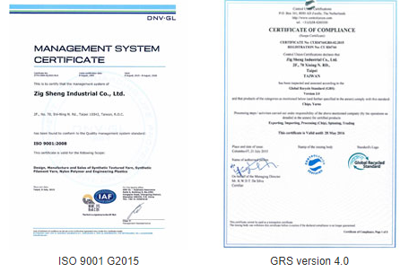
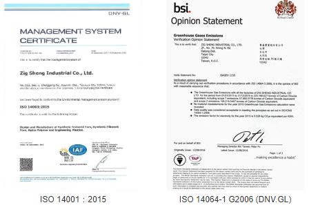
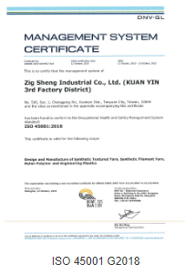

企業介紹
集盛事業
定位
● 建立纖維材料及工程塑膠的核心技術。
● 上下游垂直整合在化纖及工程塑膠領域提供品質穩定及高值化產品滿足客戶需求。
● 專注本業發展，控制成本，穩健財務結構。
企業規模
3座假撚廠、1座氣撚廠
2座尼龍紡絲廠、3座尼龍聚合廠
1座複合材料廠等
共10座工廠

專注研發
集盛創新研發中心
●產學合作，厚植核心技術，發展特殊應用領域。
● 開發獨有關鍵技術，進行專利布局，開拓市場。
● 開發高附加價值產品，減少使用有機化學品，降低環境負擔。
先進科技的實驗室
●專業研發團隊，設置儀器精良的物性、化性實驗室。
●斥資多功能聚合pilot反應器，培植基礎研究與製造技術。
●加速開發高產值、高機能性纖維。
●與國外技術先進大廠合作，期望成為世界級的產業知識中心。
具體成就
●早期研發產品：TWO-TONE Yarn、Clasen、雷雨絲等。
●近期研發Crisper、PUFY紗種。吸濕導水功能可達市面上頂級產品水準。
●專案改善，提升紡絲速度，提高紡絲產量。
●擁有多項開發技術專利。
專業認證
品質管理系統
環境管理系統
職安管理系統
紡安
企業精神
誠信—以誠待人、以信立業
樸實—勤樸簡單、合理踏實
創新—求精求變、研發創新
主要設備產能概況
聚酯長纖絲纖維工廠
(1)德國Zimmer聚酯聚合設
(2)日本Tenjin和Murata紡絲設備20線備三套
(3)聚酯產能與產品：聚酯 聚合設備： 產能 750T/D 切片 350T/D聚酯 紡絲設備： FDY 50T/DPOY 350T/D
(4)DTY假撚設備：(4.1)日本Murata 假撚機21台 (單股及雙股車台通用.均配屬日本Murata自動落紗設備)
(4.2)產能 3,000(噸/月
(5)ATY設備 (5.1) 日本Aiki 空氣加工機 12台
(5.2) 產能 432(噸/月)
主要生產產品
銷售狀況：
聚酯長纖產品，外銷約占70%，內銷占30%
主要產品：
聚酯長纖產品，包含聚酯粒、聚酯半延伸絲、
聚酯紡延絲、聚酯加工絲，及各類特殊機能長纖紗，
如阻燃、無光、亮光、CD 、環保紗及各種DOPE-DYED色,像是黑紗…..
聚隆纖維
經營策略
1.管理制度化、作業標準化、經營數據化、資訊電腦化。
2.應隨著市場環境變化而改變，切忌墨守成規、一成不變。
3.微利時代應持續管控成本、以創造利潤。
4.持續強化技術層次、深度與領先幅度。
5.持續強化財務結構。
6.適時以低成本擴張產能。
7.密切與上下游廠商合作、整合個別優勢，創造合作競爭優勢。
8.持續發展新技術，開發新產品，創造個別競爭優勢。
9.持續強化透明度與公司治理。
(1)企業經營的本質在於維持穩定的獲利，而成功的企業經營則需不斷地擁有競爭優勢，這些優勢包括
品質、成本和研發能力。
(2)首先必須建立公司完善的管理制度(涵蓋研發、生產、銷售 及財務，也唯有嚴格的內部控制， 才能
使產品的品質穩定提昇並滿足客戶的需求)。
(3)要落實研究 開發的工作(包括製程的改善及新產品的開發與市場商業化， 研發的落實將明顯的使產
品成本降低與售價提昇，成為企業獲利的基礎)。
(4)是人才的培育(人才是推動企業成長與進步的命脈，未來的企業經營會是人才爭奪戰的局面， 誰擁
有人才，誰才擁有企業，而優秀人才的取得)。
----> 提供高品質。
---->多樣化的纖維產品。
---->滿足客戶的需求。
---->追求企業經營之穩定獲利與成長回饋員工。
---->投資大眾及社會。